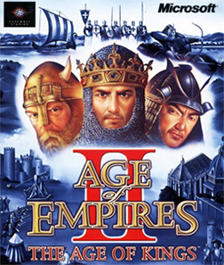

Strategy · 1999
Age of Empires II
Castles, monks and mangonels; still being patched a quarter-century on.

Cover: Wikipedia: Age of Empires II
Facts
- Released
- 1999-09-27
- Genre
- RTS
- Category
- Strategy
- Platforms
- PC, PlayStation
- Developers
- Ensemble Studios, Hidden Path Entertainment
- Publishers
- Konami, Microsoft